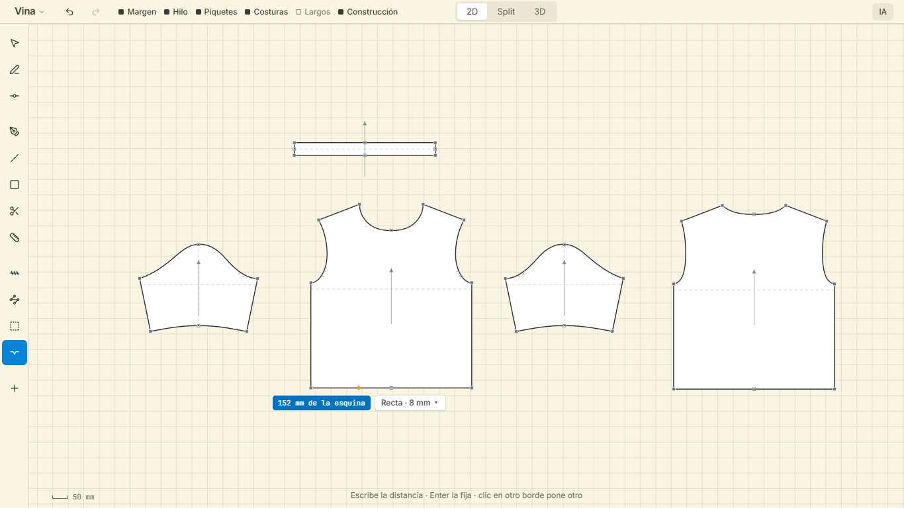
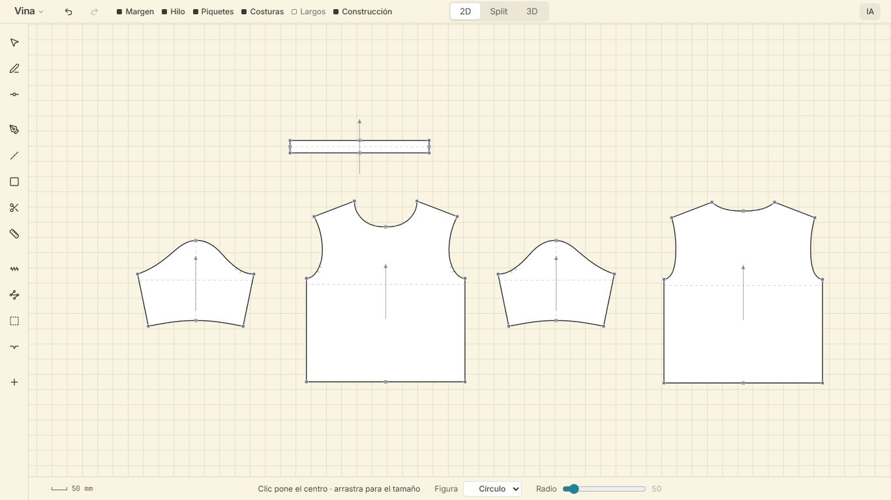

La interfaz en papel
Así queda Vina con todo lo decidido el 2 de octubre de 2026. Son capturas de producción con el patrón de María en su pantalla (1366 × 768), retocadas dentro del navegador. El documento que lo explica es ../2026-10-02-interfaz-en-papel-design.md.
Hoy, para comparar
Solo el patrón

1 · En reposo
Barra de arriba, herramientas en el margen, la hoja, una frase de ayuda y la marca de escala. Nada más.

2 · Con una pieza seleccionada
La pieza trae sus medidas, que se escriben ahí mismo, y cuatro acciones.

3 · Opciones sobre el objeto
El piquete recién puesto trae su distancia a la esquina y su forma. Lo que se cambie queda para los siguientes.

4 · Opciones antes de actuar
Las herramientas que piden datos primero los muestran en una línea al pie, junto a la frase de ayuda. Aquí, la elipse.

5 · Patrón y prenda
Una sola hoja. Lo que se ve del patrón, arriba a la izquierda; lo que se ve de la prenda, arriba a la derecha.

6 · Solo la prenda

En la app real el avatar conserva una sombra suave bajo los pies. La maqueta no pudo dejarla sin el piso gris.
7 · La pantalla vacía

8 · Un panel, cuando se pide
A la derecha y a ras. Cuatro campos; lo demás, plegado en «Producción». Las herramientas no se mueven.

9 · La IA, cuando se llama
Una línea y un solo modo. Esc la cierra.

10 · El modo oscuro
La misma interfaz con otra columna de colores: hoja gris neutro, piezas blancas. El claro es el de fábrica; el oscuro se escoge.
En reposo